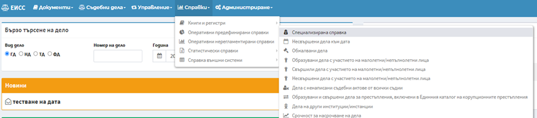
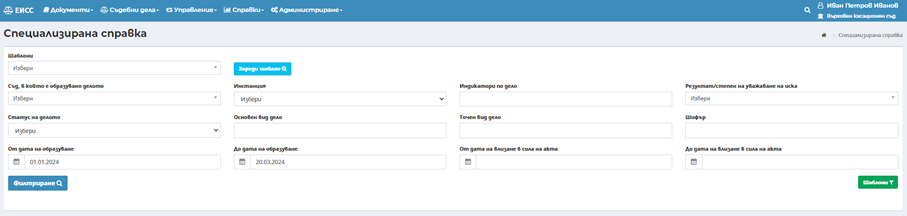
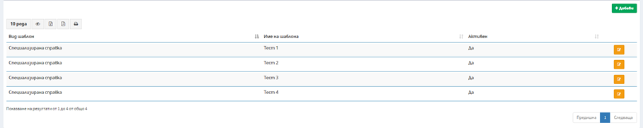
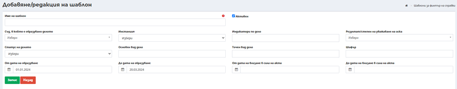
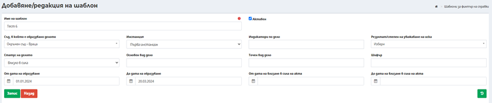
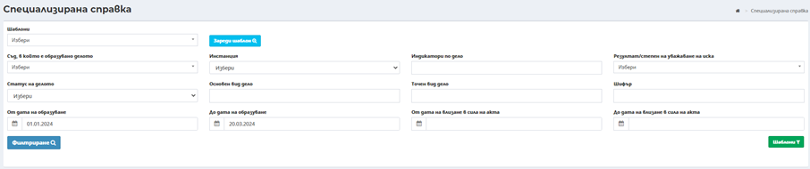
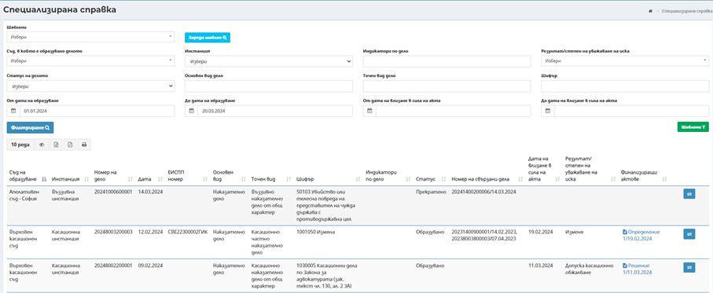

Справката се достъпва през меню Справки-> Оперативно предефинирани справки -> Специализирана справка.
Забележка: Справката е налична за потребители с избрана роля „Специализирани справки“.

След избор на Специализира справка се визуализира критерии за търсене .

Критерии за търсене:
- Съд, в който е образувано делото;
- Инстанция – първа, въззивна, касационна;
- Основен вид дело;
- Шифър – множествен избор от списък с шифри на всички съдилища;
- Дата на образуване (от – до);
- Дата на влизане в сила в сила на финализиращия акт (от – до);
- Статус на делото (образувано, висящо, спряно, прекратено, обявено за решаване, решено, обжалвано, влязло в сила );
- Индикатор по делото – множествен избор;
- Резултат/Степен на уважаване на иска на финализиращия акт по делото;
- Шаблони (зареждане на данни от запазен шаблон);
o Добавяне/редактиране на шаблон
- При избор на бутон се визуализира списък със запазени шаблони, с възможност за редактиране на вече запазените шаблони и добавяне на нови.
-

- При избор на бутон потребител има възможност за запазване на нов шаблон.
-

Потребител е необходимо да въведе Име на шаблон и критериите за търсене към този шаблон, след като потребител въведе критериите за търсене от бутон запазва въведените данни и шаблона става активен за избор от падащ списък в поле Шаблони в справката.
През бутон срещу всеки запазен шаблон, потребител има възможност за редакция на критериите за търсене на шаблона или да бъде деактивиран, чрез размаркиране на чек бокс Активен.

o Търсене в справката
В справката са налични следните критерии за търсене:
- Шаблони (зареждане на данни от запазен шаблон);
- Съд, в който е образувано делото;
- Инстанция – първа, въззивна, касационна;
- Основен вид дело;
- Шифър – множествен избор от списък с шифри на всички съдилища;
- Дата на образуване (от – до);
- Дата на влизане в сила в сила на финализиращия акт (от – до);
- Статус на делото (образувано, висящо, спряно, прекратено, обявено за решаване, решено, обжалвано, влязло в сила );
- Индикатор по делото – множествен избор;
- Резултат/Степен на уважаване на иска на финализиращия акт по делото;

При избор на запазен шаблон от критерии потребител е необходимо от падащ списък да изберат наименования шаблон и да изберат бутон , след избор на бутона се разнасят по екрана запазените критерии за търсене.
След избор на запазен шаблон или въвеждане на нови критерии от бутон се филтрират данните в справката.

След филтриране се визуализират следните колони:
o Съд, в който е образувано делото;
o Инстанция на делото (първа, въззивна, касационна);
o Номер на делото;
o Дата;
o ЕИСПП номер (когато това е приложимо);
o Основен вид дело;
o Точен вид дело;
o Шифър;
o Индикатор по делото;
o Номер на свързано дело;
o Дата на влизане в сила на финализиращия акт;
o Статус на дело (образувано, висящо, спряно, прекратено, обявено за решаване, решено, обжалвано, влязло в сила),
o Резултат степен на иска на финализиращия акт;
o Файлове на фин. Акт- при избор на акта се изтегля необезличения файл на акта;
o Бутон „Свързани дела“, който бутон препраща към екран с всички движения свързани с това дела, образувани в следствие на следните движения:
- Движение за подсъдност;
- Движение за обжалване;
- Движение за определяне на компетентен съд;
- Движение за масов отвод;
- Движение за послужване;
- Движение към друга система.
При избор на бутон се отваря нов екран с подробна информация за свързаните дела на избраното дело.